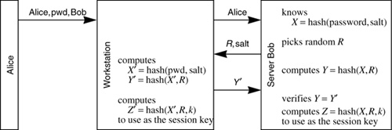

Networking Security Networking Security Networking Security Security Networking Security Networking Security Networking Charlie Kaufman Radia Perlman Mike Speciner Prentice Hall Network Security: Private Communication in a Public World, Second Edition Networking Security Networking Security Networking Security Security Networking Security Networking Security Networking Charlie Kaufman Radia Perlman Mike Speciner Prentice Hall Network Security: Private Communication in a Public World, Second Edition
24.1. NetWare V3
Novell's networking package is known as NetWare. This section describes the cryptographic security in Version 3. Version 4 security was enhanced to use public key cryptography. We describe Version 4 security in §24.2 NetWare V4.
Each server has a database consisting of information about each authorized client. The information includes the user's name, the salt, and the hash of the user's password with the salt. The salt is not actually a random number, but instead is a 32-bit user ID assigned by the server when the user is installed in the server database. The salt serves two purposes. It makes the hash of Alice's password server-dependent, so that if Alice uses the same password on multiple servers, the database at each server will, with high probability, store a different hash of her password. It also makes the hash of Ted's password different from the hash of Alice's password even if they have the same password. We'll use X to designate the hash of the password stored at the server.
Figure 24-1. Server Password Databaseusername1
userID1=salt1
hash(salt1,password1)=X1 | username2
userID2=salt2
hash(salt2,password2)=X2 | .
.
. |
Alice tells her workstation her name, password, and the name of the server to which she'd like to log in. The workstation sends Alice's name to the server. The server sends the salt value and a random challenge R to the workstation. The workstation performs the hash of the password Alice typed with the salt, and now both the workstation and the server know the same secret value X (assuming Alice typed her password correctly).
Now the workstation and the server each computes hash(X,R) to get a value we'll call Y. The workstation transmits Y to the server, and if it matches hash(X,R), then the server considers Alice authenticated. At this point the workstation and the server each compute Z=hash(X,R,constant string). Z is what they'll use as a secret session key.

After the authentication exchange each packet is integrity-protected by performing a hash of the packet and Z. Once the workstation receives an integrity-protected packet from the server, mutual authentication has occurred, because the server has proven it knows Z.
Actually, for performance reasons, only the first 52 bytes of the packet are cryptographically checksummed. Checksumming the first 52 bytes of the packet is sufficient to answer the threats of eavesdroppers gaining information from the authentication exchange and intruders hijacking a session after the initial authentication exchange. It does not prevent an attacker from removing a packet in transit and substituting one with modified data after the first 52 bytes, but this is a far less realistic threat, particularly if the two communicating parties are on the same LAN.
Why did Novell choose 52 bytes rather than some nice power of 2? Because 52 bytes is long enough to protect all the information necessary to prevent hijacking, and there's additional information appended to those 52 bytes to form a single 64-byte message digest block. The extra information is the 4-byte packet length and the 8-byte secret.
Why does the server store the secret value X rather than simply the user's password? A workstation that knew the value X would be able to impersonate Alice without knowing Alice's password. But in terms of real-world threats, it is a lot more secure to store X than Alice's password. If Trudy were to steal the server's database and acquire X, she'd only be able to exploit X if she were able to acquire the client authentication code and modify it to use X rather than compute it from what the user types. In contrast, if the server stored the user's password directly, then if Trudy stole the server's database, she'd be able to impersonate Alice directly by typing her password at unmodified client code.
Storing X rather than the password will not prevent Trudy from doing an off-line password-guessing attack, but if Alice chose her password wisely, then an off-line password-guessing attack is unlikely to succeed.
Another reason it is more secure to store X than the user's password is because of the salt. Let's assume Trudy can modify the client code, and can therefore use X to impersonate Alice directly, and therefore X is as security-sensitive as Alice's actual password. Since X is very likely to be different at each server, even if Alice's password is the same, then Trudy will only be able to impersonate Alice at the server from which Trudy acquired the database.
|